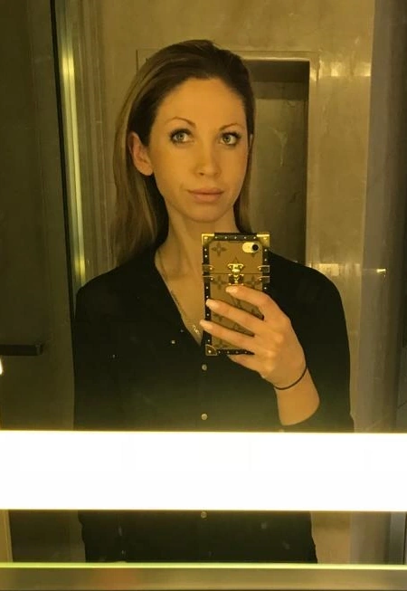

Ich stecke hinter jeder Kette und jedem Armband in meinem Shop. Die Idee, eleganten, einzigartigen und gleichzeitig leistbaren Schmuck herzustellen, kam mir vor zwei Jahren – auf einer Reise nach Santorini mit meinem Mann.
Dort kaufte er eine Perlenkette aus Vulkanperlen, doch der Preis war recht hoch. Also dachte ich mir: Das kann ich vielleicht selbst machen – und dabei meine eigenen Vorstellungen einfließen lassen.
Noch während des Urlaubs begann ich, mich nach Lavaperlen-Händlern umzusehen – und setzte vor Ort meine ersten Entwürfe um. So entstand aus einer spontanen Idee meine große Leidenschaft: handgefertigter Schmuck mit Charakter und Persönlichkeit.